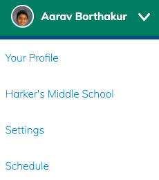

You can now view your infnite campus schedule and and see your grades' trend on Schoology!
Step 1: LoginOn going to schoology.harker.org/schedule, you may be prompted to login again, if this is your first time using the extension. Login.
Step 2: View scheduleYou can view your schedule from anywhere on schoology. Just click your image on the top right and click "schedule". If it is your first time on this page, it could take up to five seconds to load.

Step 3: Veiw grade trend
Go to your grade report and click on a course. At the bottom of your grades, you should see a graph of your grades over the grading period!
Step 4: Celebrate!You can now be happy, because your schedule will show up in a beautiful format at schoology.harker.org/schedule and your grades will be graphed at schoology.harker.org/grades/grades.
Made with awsomeness by Harker Hackers. Thanks for supporting our products! You can view our website here. All of our services are safe and open-source, so the source code of this extension can be found here.